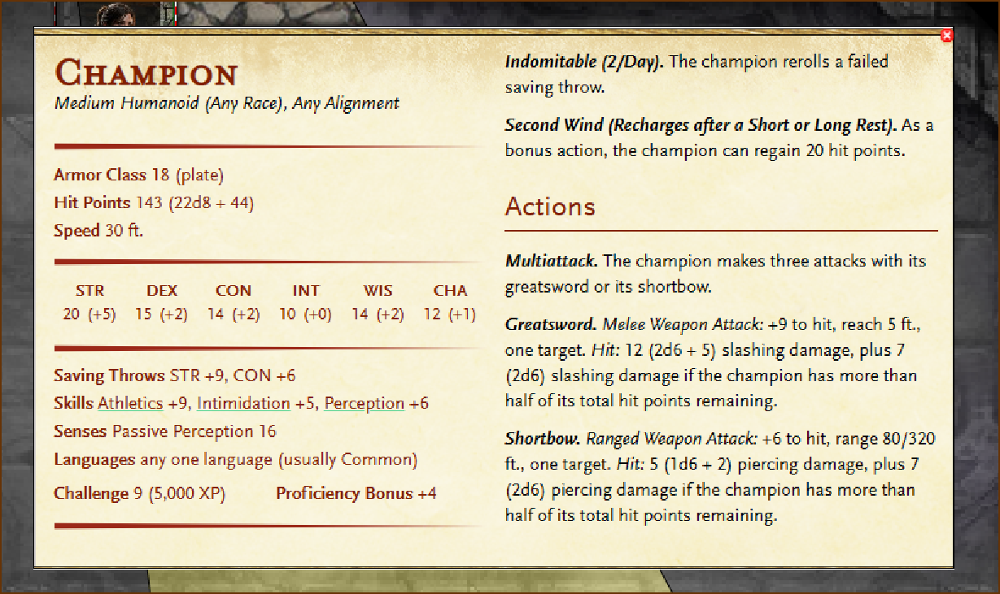

Portia Dzuth
Not a Forge of Fury company companion — walks with the Witness.
20 (+5)
15 (+2)
14 (+2)
10 (+0)
14 (+2)
12 (+1)
Defenses
Interactive like a Company Character Sheet — mark uses at the table. Not a Tempest CCS.
Max 143 · half HP at 71 wounds · extra 2d6 while wounds < 72
- Plate18
Prof +4
Passive Perc 16
Role
Champion-frame combatant — steel and grit beside Sol’s warlock craft. Saves: STR +9, CON +6.
Skills
Athletics +9 · Intimidation +5 · Perception +6
Challenge
CR 9 (5,000 XP) · Medium humanoid (any race) · Any alignment (set at table)
Reroll a failed saving throw. You must use the new roll.
Regain 20 hit points.
Multiattack
Three attacks with greatsword or shortbow.
Greatsword
+9 to hit · 2d6 + 5 slashing · plus 2d6 while wounds < 72 (more than half HP left).
Shortbow
+6 to hit · 80/320 ft · 1d6 + 2 piercing · plus 2d6 while wounds < 72.


Companion of Malcolm Sol Moonstar (Deep Memory’s Witness). Portrait and full figure from site assets; combat plate from workshop. Story and FG link can grow later.